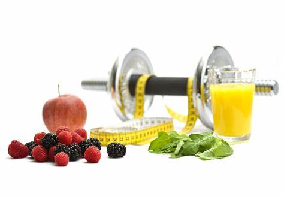

Nutritions
“Nutrition is the process of taking in food and converting it into energy and other vital nutrients required for life.
” Nutrients are the substances which provide energy and biomolecules necessary for carrying out the various body functions
. All living organisms need nutrients for proper functioning and growth.
Autotrophic Nutrition In the autotrophic mode, organisms use simple inorganic matters like water and carbon dioxide in the presence of light and chlorophyll to synthesize food on their own. In other words, the process of photosynthesis is used to convert light energy into food such as glucose. Such organisms are called autotrophs . Plants, algae, and bacteria (cyanobacteria) are some examples where autotrophic nutrition is observed. During photosynthesis, carbon dioxide and water get converted into carbohydrates. These carbohydrates are stored in the form of starch in plants. Plants later derive the energy required from the stored starch. The process of photosynthesis can be explained in three stages:
Autotrophic Nutrition In the autotrophic mode, organisms use simple inorganic matters like water and carbon dioxide in the presence of light and chlorophyll to synthesize food on their own. In other words, the process of photosynthesis is used to convert light energy into food such as glucose. Such organisms are called autotrophs . Plants, algae, and bacteria (cyanobacteria) are some examples where autotrophic nutrition is observed. During photosynthesis, carbon dioxide and water get converted into carbohydrates. These carbohydrates are stored in the form of starch in plants. Plants later derive the energy required from the stored starch. The process of photosynthesis can be explained in three stages:

RULE # 1: Pay attention
You might be surprised how many active adults overlook the importance of nutrition basics — and then run short on key nutrients. Not getting enough vitamins, minerals and other nutrients can compromise your health and your performance. Yet fueling up for activity is as easy as following the well-established rules of a healthy diet: Eat plenty of fruits and vegetables, consume lean proteins, eat healthy fats, get your whole-grain carbohydrates, and drink plenty of fluids, especially water
RULE# 2: Fuel up (even if your goal is to lose weight)
Give your body the energy it needs to do the job you want — even if you are trying to lose weight. Skimping on nutrition can reduce muscle mass, lower bone density and cause fatigue. This puts you at risk of injury and illness, increases recovery time, causes hormonal problems, and, for women, menstrual issues. Make sure your diet plan supplies enough nutrient-dense calories so you can exercise and stay injury-free and healthy.
You might be surprised how many active adults overlook the importance of nutrition basics — and then run short on key nutrients. Not getting enough vitamins, minerals and other nutrients can compromise your health and your performance. Yet fueling up for activity is as easy as following the well-established rules of a healthy diet: Eat plenty of fruits and vegetables, consume lean proteins, eat healthy fats, get your whole-grain carbohydrates, and drink plenty of fluids, especially water
RULE# 2: Fuel up (even if your goal is to lose weight)
Give your body the energy it needs to do the job you want — even if you are trying to lose weight. Skimping on nutrition can reduce muscle mass, lower bone density and cause fatigue. This puts you at risk of injury and illness, increases recovery time, causes hormonal problems, and, for women, menstrual issues. Make sure your diet plan supplies enough nutrient-dense calories so you can exercise and stay injury-free and healthy.
.jpg)